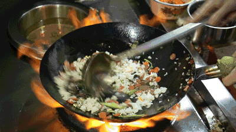
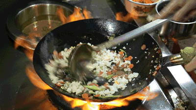

炒（chǎo)
:max_bytes(150000):strip_icc():format(webp)/__opt__aboutcom__coeus__resources__content_migration__serious_eats__seriouseats.com__recipes__images__2016__01__20160206-fried-rice-food-lab-68-807af5859cdd42dfb96bda07f62fb32e.jpg) 

炒（chǎo) Stir frying is the most common cooking method. First, the Chinese cut raw ingredients into small pieces, heat oil in a pot, then add their ingredients to the hot oil. Many Chinese chefs add spices, salt and MSG. Before plating the food, chefs add some starch to bind stir-fried pieces of food to the sauce in the pot.